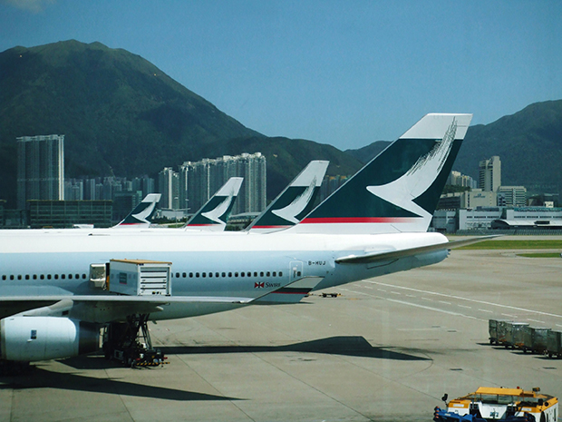
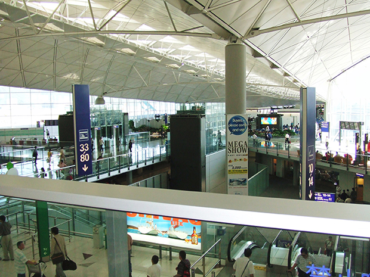

航空券（各自でのお手配）
当プログラムの料金に国際航空券代は含まれておりません。旅行会社・航空会社のサイト、又は下記のような比較ポータルで、ご都合のよい日時と条件をお選びください。深夜・早朝着の路線もあり得ます。送迎の可否・時刻は、プログラムに含まれる範囲で、受領の案内に従ってください。券種・変更条件は、ご購入先の約款に従ってください。
手配のヒント
- 日本発スリランカ行き（コロンボ国際空港等）では、スリランカ航空の直行便（羽田発着の運航有無等は、時期で変わる場合があります。公式サイトの運航表でご確認ください）が乗り継ぎの少なさの目安にされることが多いです。発着地や日程によっては乗り継ぎ便が現実的な選択肢になることもあります。
- 価格を比較する場合は、航空券比較サイト（例: スカイスキャナー）を使う方も少なくありません。表示条件（手荷物・変更可否・燃油サーチャージ等）を開いてから選ぶと、出発前のトラブルを減らしやすいです。
上記の名称・リンクは案内上の例であり、当社の推奨・保証を表すものではありません。払戻手数料やキャンセル等は、各社の規則に従ってください。


入国手続（ビザ・旅券）と最新情報
スリランカ及びネパールに入国するにあたり、必要な旅券（パスポート）の有効期間、査証（ビザ）又は到着前の電子手続、滞在期間、必要な書式や費用は、渡航国の法令や運用、お客さまの旅券状況によって異なります。時期ごとに条件が改められることも少なくないため、出発前に必ず、最新の公的情報をあらためてご確認ください。
どこを見ればよいか
- 日本の外務省が提供する、渡航上の安全情報及び国・地域別の注意事項のほか、旅券等に関する一般情報: 外務省 海外安全ホームページ（トップ又は国名検索から、スリランカ・ネパールのページを開き、旅券、ビザ、入国の注意等をご確認ください）。地図から国を選ぶこともできます: 国・地域別 海外安全情報（地図から）。
- 旅券、在外公館、渡航前の手続全般: 外務省 海外渡航・滞在。領事窓口や在留届（たびレジ）等、渡航前後の体制についても、ここから案内にたどれます。
- 上記のほか、入国を管轄する各国の移民局・外務省又は在各国の大使館・領事館が公表する、査証申請用の正規のウェブサイトや要綱に従い、当該国が求める手続を完了してください。当社は、公的情報の代替となり得る法的助言又は、個別のビザ手続代行を行いません。
海外旅行保険
必ず、海外旅行保険（渡航中の傷病・損害等の補償が付帯するもの）にご加入ください
当社のプログラムに参加の方には、海外旅行保険への加入をおすすめし、事実上の必須に近い重要性があると考えています。病気、ケガ、責任に関わる事案、手荷物の紛失・損壊、緊急時の帰国費用等のリスクに備えるため、渡航前に、補償内容（保険金額の限度・免責・特約等）を書面又は各社の案内に沿って、ご本人で納得のいく形でお選びください。
選び方のポイント
病気・ケガ、緊急搬送、携行品損壊、賠償責任、弁護士費用等は、加入商品の約款・特約が異なり、補償額の高低や支払条件もばらつきます。比較の際、特に下記を併せてお読みください。
- 治療（疾病・傷害）・緊急搬送：日額上限、既往症、歯科、高所活動等の扱い。商品によっては「治療救援費用」等の枠に、治療・搬送がまとめられています
- 携行品損害：盗難・水濡れ、貴重品、限度額及び不担保品
- 賠償責任：日常生活やレッスン先での事故、賠償額
病気・ケガ、賠償事故、携行品、法律相談、緊急搬送等の個々の扱いは、加入商品の約款・特約によって大きく異なります。保険未加入（又は不十分な内容のまま出発）の場合、治療費・搬送費・賠償等は、自己責任に基づき自己負担となり得ます。渡航前に、補償内容、免責、告知義務、スポーツ特約等を必ずご確認ください。
保険に加入しない選択をした場合、現地における医療・搬送・賠償・帰国等に要する費用の一切は、当社又は受入先の予測を超えて発生し得ます。いかなる場合も、当社は、保険未加入に伴い生じる損害、費用又は損失について、補償、補填又は負担を一切行いません。
保険商品の例（販売元・名称は変更され得ます）
保険への加入手続は、取扱保険代理店、旅行会社、保険会社等を通じて、お客さまにてお手続きください。下記は、国内で広く扱われる商品群の例です。補償内容は、各商品のパンフレット・約款に従います。
補償内容の考え方（目安・例）
実際の補償額・対象外は、契約各条項に従います。下表は、検討時の目安です（2026年時点の一般的な枠。商品により異なります）。
| 区分の例 | ふだん確認したい点 |
|---|---|
| 傷害・疾病治療 | 日額・疾病免責日数、既往症、歯科、精神的疾患、高所・乗物等の除外 |
| 緊急搬送・親族帰国 | 保険会社へ連絡する手続、現地病院の扱い、限度額 |
| 携行品・現金等 | 不担保品、盗難の届出、限度額、免責金 |
| 賠償責任 | 自転車・レジャー、賠償の対象、限度額 |
| 法律相談・弁護士費用 | 特約の有無、起算点 |
当社は、上記保険の代理店ではありません。補償範囲の最終判断は、各保険契約、約款、及び販売者の説明に従います。
持ち物の確認と次のステップ
パスポート、航空券、現金、持ち物の最終確認は、出発までの流れの中で、出発前の一週間前後の段階として触れています。荷造りの目安にしたい方は、同ページの該当箇所を合わせてご覧ください。